knitr::opts_chunk$set(fig.path = "images/")Data Analysis Replication
Introduction
This report presents a replication of selected data analyses from the study “Auditory and cognitive contributions to recognition of degraded speech in noise: Individual differences among older adults” by Daniel Fogerty and Judy R. Dubno.
This study belongs to the field of auditory neuroscience and speech perception.
The goal of this replication is to reproduce a subset of key statistical findings in the above study using R and to evaluate how closely the replicated results align with those reported in the original study.
Original Study Overview
1) Goal of the study
This study looked at how older adults’ auditory and cognitive capacities affect their ability to recognize speech in noisy environments.
The study specifically examined individual differences in speech recognition skills between older people with hearing impairment (OHI) and those with. normal hearing (ONH).
To understand degraded speech under difficult listening situations, the authors attempted to identify which underlying skills such as hearing sensitivity, working memory, vocabulary knowledge, and speech “glimpsing” ability are most crucial.
2) Data used in the original study
Participants: 40 adults (20 with normal hearing (ONH) and 20 with hearing impairment (OHI))
Predictor variables:
| Auditory measures | Auditory and Cognitive measures |
|---|---|
| Hearing thresholds | Tasks assessing working memory, episodic memory, processing speed, and executive function |
| Speech related processing abilities (modulation detection and speech glimpsing) | Cognitive linguistic measures such as vocabulary knowledge and linguistic closure |
Dataset
Three experimental degraded speech conditions were considered.
Spectrally reduced speech
Speech in modulated noise
A combination of both
For each data set above, speech recognition thresholds (SRTs) were calculated at 20%, 50%, and 80% recognition levels. The three datasets described in the original study do not refer to separate data files, but rather to three different experimental speech recognition conditions. These are represented in the dataset by separate outcome variables (D1, D2, D3), each corresponding to a different type of degraded speech condition.
The method used to do that was psychometric functions based on the extended Short-Time Objective Intelligibility (eSTOI). ( This is a mathematical mapping model that relate the objective eSTOI score (a scalar between 0 and 1) to subjective human speech intelligibility scores).
3) Analyses conducted in the original study
Like I mentioned above, the original study looked at the association between predictor variables and speech recognition performance. the statistical methods they used are:
1) A Principal components analysis (PCA) to generate composite predictor variables and minimize the dimensionality of auditory and cognitive assessments. (The data set after PCA is available for use ready)
2) After PCA, a summarization of participant characteristics and key predictor variables for the ONH and OHI groups have been done.
2) A correlational analyses to see which predictors were linked to speech recognition results. A subset of important predictors was chosen for additional examination based on these findings.
3) A multiple regression dominance analysis to get certain the relative significance of each predictor in explaining variance in speech recognition performance.
- This analysis was carried out independently for the ONH and OHI groups, as well as for various datasets and task difficulty levels (SRT20, SRT50, and SRT80).
4) Analyses chosen for replication
I choose to replicate the following analyses from above except for the initial exploratory data analysis i am going to do.
First, descriptive statistics are used to summarize participant characteristics and key predictor variables for the ONH and OHI groups. I do this analysis using variables of age, gender, hearing sensitivity.
Second, I will create a descriptive visualization is created using violin plots to compare the distributions of key predictor variables between groups, similar to Figure 3 in the original study.
Third, I will conduct an inferential analysis to examine the relationship between predictor variables and speech recognition outcomes, providing a simplified approximation of the dominance analysis used in the original study.I will do a visualization of this analysis too.
Finally, a I will do a correlation analysis is performed to explore relationships between auditory and cognitive predictors and speech recognition performance, and to assess whether similar patterns to those reported in the original study are observed. This will be a second descriptive analysis.
Variables used in the study
Data import and initial inspection, visualization of data
The dataset I am going to use for this replication, was obtained from the supporitng information provided with the original paper.
The data file contains participant level measurements auditory and cognitive predictor variables, and speech recognition outcomes.
1) I will initially inspect the structure of the dataset and the relationships among variables. What I want to show is how these datasets contain large number of variables and why they expected redundancy among them and why it was necessary to first reduce the dimensionality of the data.
# Installed the packages "corrplot" and "combinat" and loading the necessary libraries, I have removed installing code lines after installinglibrary(readxl)
library(tidyverse)── Attaching core tidyverse packages ──────────────────────── tidyverse 2.0.0 ──
✔ dplyr 1.2.1 ✔ readr 2.1.6
✔ forcats 1.0.1 ✔ stringr 1.6.0
✔ ggplot2 4.0.1 ✔ tibble 3.3.1
✔ lubridate 1.9.4 ✔ tidyr 1.3.2
✔ purrr 1.2.1
── Conflicts ────────────────────────────────────────── tidyverse_conflicts() ──
✖ dplyr::filter() masks stats::filter()
✖ dplyr::lag() masks stats::lag()
ℹ Use the conflicted package (<http://conflicted.r-lib.org/>) to force all conflicts to become errorslibrary(corrplot)corrplot 0.95 loadedlibrary(combinat)
Attaching package: 'combinat'
The following object is masked from 'package:utils':
combnFirst I am going to load the data sheets for auditory and cognitive measures in Table 1. Summary table of experimental measures, including domains, tasks, and variables. https://doi.org/10.1371/journal.pone.0331487.t001
auditory_variables <- read_excel("data/journal.pone.0331487.s002.xlsx",sheet = "AuditoryVariables",skip = 1) # Skipping the header above data columns because the auditory dataset contained multi-level headersNew names:
• `` -> `...11`
• `` -> `...16`cognitive_variables <- read_excel("data/journal.pone.0331487.s002.xlsx",
sheet = "CognitiveVariables (z-scores)")First, doing a basic exploration
head(auditory_variables)# A tibble: 6 × 19
SUBJ_ID HearGroup `250 Hz` `500 Hz` `1000 Hz` `2000 Hz` `3000 Hz` `4000 Hz`
<chr> <chr> <dbl> <dbl> <dbl> <dbl> <dbl> <dbl>
1 S01 ONH 5 5 5 10 10 10
2 S02 ONH 10 15 15 5 5 10
3 S03 ONH 0 -5 0 0 10 5
4 S04 ONH 10 10 5 10 15 25
5 S05 ONH 5 5 15 15 0 15
6 S06 ONH 15 20 10 10 15 20
# ℹ 11 more variables: `6000 Hz` <dbl>, `8000 Hz` <dbl>, ...11 <lgl>,
# MD_Low <dbl>, MD_High <dbl>, MDI_Low <dbl>, MDI_High <dbl>, ...16 <lgl>,
# SSN <dbl>, SMN <dbl>, `Glimpsing (SMN-SSN)` <dbl>glimpse(auditory_variables)Rows: 40
Columns: 19
$ SUBJ_ID <chr> "S01", "S02", "S03", "S04", "S05", "S06", "S07",…
$ HearGroup <chr> "ONH", "ONH", "ONH", "ONH", "ONH", "ONH", "ONH",…
$ `250 Hz` <dbl> 5, 10, 0, 10, 5, 15, 20, 10, 10, 10, 5, 0, 25, 1…
$ `500 Hz` <dbl> 5, 15, -5, 10, 5, 20, 15, 5, 0, 10, 5, 5, 20, 5,…
$ `1000 Hz` <dbl> 5, 15, 0, 5, 15, 10, 15, 10, 0, 10, 10, 10, 5, 0…
$ `2000 Hz` <dbl> 10, 5, 0, 10, 15, 10, 10, 20, 10, 15, 10, 15, 15…
$ `3000 Hz` <dbl> 10, 5, 10, 15, 0, 15, 15, 5, 5, 10, 0, 5, 20, 20…
$ `4000 Hz` <dbl> 10, 10, 5, 25, 15, 20, 10, 25, 10, 15, 20, 10, 1…
$ `6000 Hz` <dbl> 5, 15, 25, 40, 20, 35, 45, 25, 10, 25, 20, 15, 2…
$ `8000 Hz` <dbl> 15, 30, 25, 55, 20, 55, 70, 70, 30, 30, 15, 25, …
$ ...11 <lgl> NA, NA, NA, NA, NA, NA, NA, NA, NA, NA, NA, NA, …
$ MD_Low <dbl> 0.17, 0.31, 0.11, 0.15, 0.23, 0.37, 0.18, 0.29, …
$ MD_High <dbl> 0.16, 0.42, 0.33, 0.19, 0.19, 0.14, 0.38, 0.15, …
$ MDI_Low <dbl> 0.58, 0.23, 0.15, 0.18, 0.46, 0.25, 0.52, 0.38, …
$ MDI_High <dbl> 0.37, 0.60, 0.27, 0.72, 0.75, 0.33, 0.29, 0.38, …
$ ...16 <lgl> NA, NA, NA, NA, NA, NA, NA, NA, NA, NA, NA, NA, …
$ SSN <dbl> 0.66, 0.38, 0.44, 0.32, 0.40, 0.46, 0.18, 0.16, …
$ SMN <dbl> 0.84, 0.72, 0.74, 0.52, 0.78, 0.84, 0.50, 0.54, …
$ `Glimpsing (SMN-SSN)` <dbl> 0.18, 0.34, 0.30, 0.20, 0.38, 0.38, 0.32, 0.38, …head(cognitive_variables)# A tibble: 6 × 11
SUBJ_ID HearGroup zShortRecall zNumSeries zABDS zVBDS zCategoryFluency
<chr> <chr> <dbl> <dbl> <dbl> <dbl> <dbl>
1 S01 ONH -0.65 -1.08 0.53 0.55 0.51
2 S02 ONH -0.21 -0.38 0.53 1.2 -1.17
3 S03 ONH 0.68 -0.38 -0.86 -0.77 -0.5
4 S04 ONH 0.23 -1.78 -1.56 -1.42 -1.68
5 S05 ONH 1.57 0.32 -0.16 -1.42 -0.16
6 S06 ONH -0.21 0.32 1.23 1.2 0.01
# ℹ 4 more variables: zBackwardCounting <dbl>, zDelayRecall <dbl>,
# zConnections_Alternating <dbl>, zStroop_Mismatch <dbl>glimpse(cognitive_variables)Rows: 40
Columns: 11
$ SUBJ_ID <chr> "S01", "S02", "S03", "S04", "S05", "S06", "S0…
$ HearGroup <chr> "ONH", "ONH", "ONH", "ONH", "ONH", "ONH", "ON…
$ zShortRecall <dbl> -0.65, -0.21, 0.68, 0.23, 1.57, -0.21, -0.65,…
$ zNumSeries <dbl> -1.08, -0.38, -0.38, -1.78, 0.32, 0.32, 0.32,…
$ zABDS <dbl> 0.53, 0.53, -0.86, -1.56, -0.16, 1.23, -1.56,…
$ zVBDS <dbl> 0.55, 1.20, -0.77, -1.42, -1.42, 1.20, -0.11,…
$ zCategoryFluency <dbl> 0.51, -1.17, -0.50, -1.68, -0.16, 0.01, -0.50…
$ zBackwardCounting <dbl> 0.00, -1.30, -0.96, -1.65, -0.96, -0.61, 0.61…
$ zDelayRecall <dbl> -0.24, -0.66, -0.24, -0.66, 0.17, -0.24, -0.2…
$ zConnections_Alternating <dbl> -0.17, -1.05, -0.48, -1.82, 0.49, -0.95, -0.4…
$ zStroop_Mismatch <dbl> -0.31, -1.25, -1.05, -0.05, -1.65, -1.25, -0.…Now I am going to draw some distribution plots for the exploratory data analysis. There are no plots shown for this in the original paper. So I am going to draw.
For auditory variables,
auditory_variables_long <- auditory_variables%>%
pivot_longer(cols = `250 Hz`:`8000 Hz`,
names_to = "Frequency",
values_to = "Threshold")
ggplot(auditory_variables_long, aes(x = Threshold)) +
geom_histogram(bins = 20) +
facet_wrap(~Frequency, scales = "free") +
theme_minimal() +
labs(title = "Distribution of Hearing Thresholds Across Frequencies")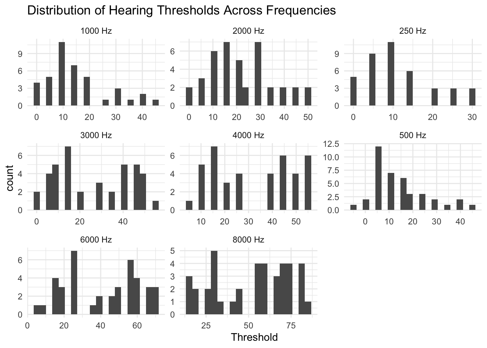
Correlations between auditory variables
auditory_variables_1 <- auditory_variables %>%
select(`250 Hz`:`8000 Hz`)
auditory_correlations <- cor(auditory_variables_1)
library(corrplot)
corrplot(auditory_correlations, method = "color", type = "upper")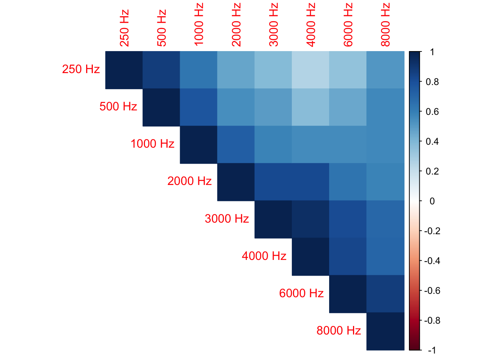
For cognitive variables
cognitive_variables_long <- cognitive_variables %>%
pivot_longer(cols = zShortRecall:zStroop_Mismatch,
names_to = "Test",
values_to = "Score")
ggplot(cognitive_variables_long, aes(x = Score)) +
geom_histogram(bins = 20) +
facet_wrap(~Test, scales = "free") +
theme_minimal() +
labs(title = "Distribution of Cognitive Test Scores")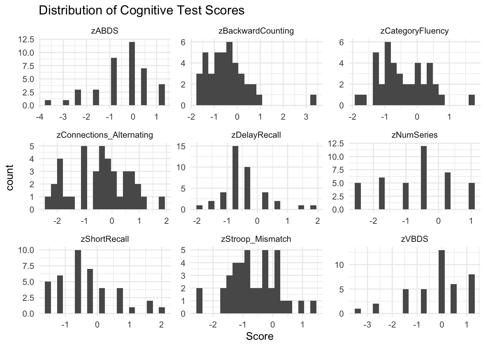
Correlations between cognitive variables
cognitive_variables_1 <- cognitive_variables %>%
select(zShortRecall:zStroop_Mismatch)
cognitive_correlation <- cor(cognitive_variables_1)
# drawing the correlation matrix
corrplot(cognitive_correlation, method = "color", type = "upper")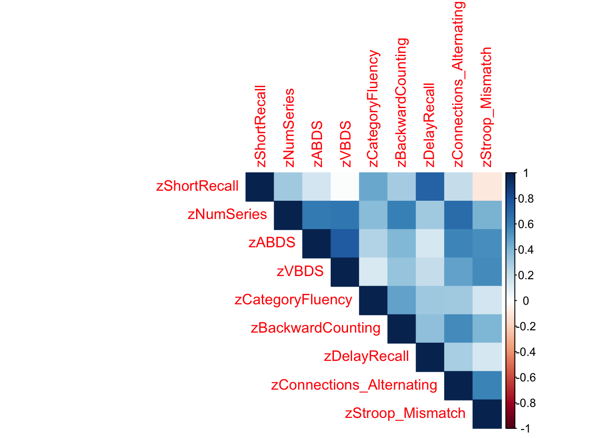
The correlation matrices shows a substantial correlations among variables within both auditory and cognitive domains. In the auditory dataset, hearing thresholds across different frequencies show strong positive correlations, indicating that individuals with elevated thresholds at one frequency tend to show similar patterns across other frequencies. This suggests redundancy in the measurement of hearing sensitivity.
Similarly, in the cognitive dataset, several measures show moderate to strong correlations, particularly among tasks assessing related cognitive functions such as memory and executive control. These patterns indicate that multiple variables may be capturing overlapping underlying constructs.
These findings support the use of principal components analysis (PCA) in the original study, as PCA allows for the reduction of correlated variables into a smaller set of independent components representing underlying auditory and cognitive processes.
The dataset includes principal component (PCA) scores for auditory and cognitive predictors, as well as speech recognition thresholds (SRTs) for multiple datasets. Because PCA variables are already provided, I am not going to recompute PCA, and instead I use these variables directly in the analyses.
Replication analysis 1: Descriptive statistics
Descriptive analysis: Participant characteristics
The first descriptive analysis in the original paper focuses on describing the demographic and baseline characteristics of the participants. This includes summarizing age, gender distribution, hearing thresholds, for the two groups: older normal-hearing (ONH) and older hearing-impaired (OHI) listeners.
The goal of this analysis is to replicate the general patterns reported in the original study, such as differences in hearing thresholds between groups and similarities in cognitive abilities.
Now I am loading the correct sheet where the data after doing the PCA., which is named as “Predictors&Outcomes”.
df <- read_excel(
"data/journal.pone.0331487.s002.xlsx",
sheet = "Predictors&Outcomes", ,skip = 1
)
df$HearGroup <- as.factor(df$HearGroup)Summarizing age and sample size.
df %>%
group_by(HearGroup) %>%
summarise(
n = n(),
Age_mean = mean(Age),
Age_sd = sd(Age),
Age_min = min(Age),
Age_max = max(Age)
)# A tibble: 2 × 6
HearGroup n Age_mean Age_sd Age_min Age_max
<fct> <int> <dbl> <dbl> <dbl> <dbl>
1 OHI 20 72.2 8.48 60 85
2 ONH 20 67.4 4.01 60 74Gender distribution
table(df$HearGroup, df$Sex)
F M
OHI 13 7
ONH 17 3These above results showes that although the OHI group was slightly older on average, both groups were broadly comparable in age range. The gender distribution also shows a higher proportion of female participants in both groups, with a more balanced distribution in the OHI group.
Key predictor variables : Audiogram_PCA ; Glimpsing ; WorkingMemory_PCA; Vocabulary. The authors have not generated any kind of summarization or any descriptive statistics out of these variables.
But, they have analyzed a,
Frequency by frequency mean audiogram from raw audiometric threshold columns like 250Hz, 500Hz, 1000Hz and so on from the “AuditoryVariables” sheet.
So I am trying to replicate that.
for that I need to seperate a dataset that only ha sthe threshold columns.
auditory_variables_long <- auditory_variables %>%
select(HearGroup, `250 Hz`, `500 Hz`, `1000 Hz`, `2000 Hz`, `4000 Hz`, `8000 Hz`) %>%
pivot_longer(
cols = `250 Hz`:`8000 Hz`,
names_to = "Frequency",
values_to = "Threshold"
) %>%
mutate(
Frequency = factor(
Frequency,
levels = c("250 Hz", "500 Hz", "1000 Hz", "2000 Hz", "4000 Hz", "8000 Hz")
)
)
auditory_variables_summary <- auditory_variables_long %>%
group_by(HearGroup, Frequency) %>%
summarise(
mean_threshold = mean(Threshold, na.rm = TRUE),
sd_threshold = sd(Threshold, na.rm = TRUE),
.groups = "drop"
)
auditory_variables_summary# A tibble: 12 × 4
HearGroup Frequency mean_threshold sd_threshold
<chr> <fct> <dbl> <dbl>
1 OHI 250 Hz 14 10.3
2 OHI 500 Hz 19 13.9
3 OHI 1000 Hz 22 12.0
4 OHI 2000 Hz 33 9.38
5 OHI 4000 Hz 48 5.71
6 OHI 8000 Hz 67 13.5
7 ONH 250 Hz 9.5 6.05
8 ONH 500 Hz 9.5 7.24
9 ONH 1000 Hz 8.75 5.82
10 ONH 2000 Hz 11 5.76
11 ONH 4000 Hz 16 5.98
12 ONH 8000 Hz 37.5 19.0 Now I can make a scatter kind of plot also using the sd_threshold just like in the original study.
The speciality is when plotting an audiogram we have to make the y axis reverse, because lower thresholds are the better and higher values.
ggplot(auditory_variables_summary, aes(x = Frequency, y = mean_threshold,
group = HearGroup, shape = HearGroup, linetype = HearGroup)) +
geom_line(color = "black") +
geom_point(color = "black", size = 2.5) +
geom_errorbar(
aes(ymin = mean_threshold - sd_threshold, ymax = mean_threshold + sd_threshold),
width = 0.1,
color = "black"
) +
scale_y_reverse() +
labs(
title = "Mean Audiograms for the Two Listener Groups",
x = "Frequency (Hz)",
y = "Threshold (dB HL)"
) +
theme_classic()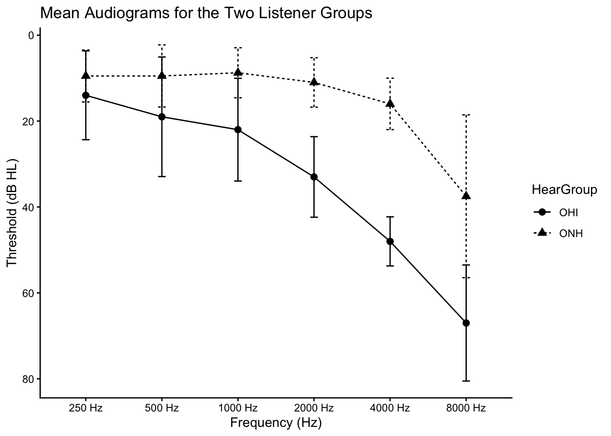
Replication analysis 2: Descriptive visualization
To visualize a part of the above descriptive statistics, I will try to create the violin plots to compare the distributions of key predictor variables between ONH and OHI groups. The selected variables include:
- Audiogram PCA (hearing sensitivity) - now not the raw threshold values but value s after PCA
- Speech glimpsing ability
- Working memory PCA
- Vocabulary knowledge
These all values are extracted from the same after PCA data sheet.
To create the violin plots,
df$HearGroup <- factor(df$HearGroup, levels = c("ONH", "OHI"))
plot_df <- df %>%
select(HearGroup, Audiogram_PCA, Glimpsing, WorkingMemory_PCA, Vocabulary) %>%
pivot_longer(
cols = c(Audiogram_PCA, Glimpsing, WorkingMemory_PCA, Vocabulary),
names_to = "Variable",
values_to = "Value"
) %>%
mutate(
Variable = factor(
Variable,
levels = c("Audiogram_PCA", "Glimpsing", "WorkingMemory_PCA", "Vocabulary"),
labels = c("Audiogram PCA", "Glimpsing (z-score)", "Working Memory PCA", "Vocab.Knowledge -z-score")
)
)
ggplot(plot_df, aes(x = HearGroup, y = Value)) +
geom_violin(trim = FALSE, fill = "grey80", color = "black") +
geom_boxplot(width = 0.12, fill = "white", outlier.shape = NA) +
stat_summary(fun = median, geom = "point", size = 2) +
facet_wrap(~Variable, scales = "free_y", nrow = 1) +
labs(
x = NULL,
y = NULL,
title = "Violin plots for the four predictor variables"
) +
theme_classic()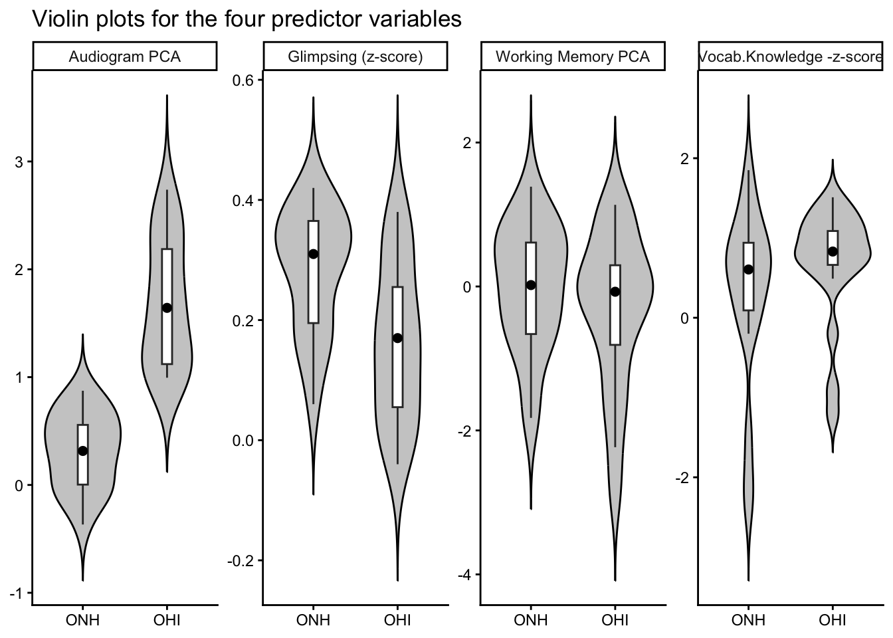
Replication analysis 3: Inferential analysis: Predictor importance
Now I am going to replicate out of all predictors, which one contributes most to explaining speech recognition. The original study used dominance analysis to determine the relative contribution of the above four predictor variables to speech recognition
Dominance analysis measures the importance of each predictor variable as defined by the amount of variance accounted for that variable alone and in all possible combinations of the other predictor variables from the linear regression model.This dominance analysis was conducted for each of the nine outcome variables (three SRTs for three datasets).
so: Examining key predictors: Audiogram PCA, glimpsing, working memory, and vocabulary relate to speech recognition outcomes.
The method they had used were,
Multiple regression models were constructed for each dataset and speech recognition threshold (20%, 50%, and 80%).
The dependent variable was speech recognition performance, and the independent variables were the four predictors.
Thinking about how they calculated the dominance, i saw that it involved calculating the contribution of each predictor variable to the explained variance in the dependent variable individually as well as in combination.Then an average across all predictor subsets. I have to repeat this for all predictors, two groups and across all SRTs and all datasets. So better to write a. function to do this.
This is the most hard part for me in this assignment, because the dominance analysis was a great deal in this study, and was also computationally taking time to do individually one by one.
I totally referred the study they have told which is Humes et al., 2021 - https://doi.org/10.3389/fnagi.2021.702739
# writing a fucntion to compute the dominance
compute_dominance <- function(data, outcome) {
predictors <- c("Audiogram_PCA", "Glimpsing",
"WorkingMemory_PCA", "Vocabulary")
# Above are the four predictir variables we are considering
all_subsets <- unlist(
lapply(1:length(predictors), function(x) {
combn(predictors, x, simplify = FALSE)
}),
recursive = FALSE
)
# The above step actually is for creating all the combinations of predictor variable subsets. because the dominance value calculation they did was based on all possible regression submodels.
results <- data.frame()
# Compute R² for all subsets (every combination) I defined above, and i can store in results data frame.
for (subset in all_subsets) {
formula <- as.formula(
paste(outcome, "~", paste(subset, collapse = " + "))
)
model <- lm(formula, data = data) # here is we use the multiple regression models
results <- rbind(results, data.frame(
Predictors = paste(subset, collapse = ","),
R2 = summary(model)$r.squared
))
}
# Creating an empty table to store dominance values For each predictor, I will calculate its average contribution to R² across all possible subsets
dominance <- data.frame(Predictor = predictors, Contribution = 0)
for (pred in predictors) { # I am trying to store calculated contribution values now
contrib_values <- c()
for (subset in all_subsets) {
if (!(pred %in% subset)) next
subset_without <- setdiff(subset, pred) # I remember using this for the wordplay game assignment. I use it here to consider different subsets.
formula_with <- as.formula(
paste(outcome, "~", paste(subset, collapse = " + "))
)
model_with <- lm(formula_with, data = data)
r2_with <- summary(model_with)$r.squared
if (length(subset_without) == 0) {
r2_without <- 0
} else {
formula_without <- as.formula(
paste(outcome, "~", paste(subset_without, collapse = " + "))
)
model_without <- lm(formula_without, data = data)
r2_without <- summary(model_without)$r.squared
}
# extracting r2 from each model summary above for predictor subsets with and both without that predictor in the subset
contrib_values <- c(contrib_values, r2_with - r2_without)
}
dominance$Contribution[dominance$Predictor == pred] <- mean(contrib_values)
}
return(dominance)
}I want to test this function.”D1_SRT50_ESTOI” is one of the SRT columns i have in the dataset, So i will test just for that.its dataset 1, SRT50.
df_ONH <- df %>% filter(HearGroup == "ONH")
dominance_test <- compute_dominance(df_ONH, "D1_SRT50_ESTOI")
dominance_test Predictor Contribution
1 Audiogram_PCA 0.231144245
2 Glimpsing 0.008554378
3 WorkingMemory_PCA 0.133605883
4 Vocabulary 0.247175008Looking at the figure 04 of the original study, the calculated values seems to be nearly good.
so, now running for all SRTs and datasets
outcomes <- c(
"D1_SRT20_ESTOI", "D1_SRT50_ESTOI", "D1_SRT80_ESTOI",
"D2_SRT20_ESTOI", "D2_SRT50_ESTOI", "D2_SRT80_ESTOI",
"D3_SRT20_ESTOI", "D3_SRT50_ESTOI", "D3_SRT80_ESTOI"
)
run_all <- function(data, group_name) {
results <- data.frame()
for (out in outcomes) {
dom <- compute_dominance(data, out)
dom$Outcome <- out
dom$Group <- group_name
results <- rbind(results, dom)
}
return(results)
}
dom_ONH <- run_all(df %>% filter(HearGroup == "ONH"), "ONH")
dom_OHI <- run_all(df %>% filter(HearGroup == "OHI"), "OHI")
dominance_all <- rbind(dom_OHI, dom_ONH)
dominance_all Predictor Contribution Outcome Group
1 Audiogram_PCA 0.170757416 D1_SRT20_ESTOI OHI
2 Glimpsing 0.272869615 D1_SRT20_ESTOI OHI
3 WorkingMemory_PCA 0.142282935 D1_SRT20_ESTOI OHI
4 Vocabulary 0.098470746 D1_SRT20_ESTOI OHI
5 Audiogram_PCA 0.125253731 D1_SRT50_ESTOI OHI
6 Glimpsing 0.299643961 D1_SRT50_ESTOI OHI
7 WorkingMemory_PCA 0.097406303 D1_SRT50_ESTOI OHI
8 Vocabulary 0.085124498 D1_SRT50_ESTOI OHI
9 Audiogram_PCA 0.051629285 D1_SRT80_ESTOI OHI
10 Glimpsing 0.258552434 D1_SRT80_ESTOI OHI
11 WorkingMemory_PCA 0.061746131 D1_SRT80_ESTOI OHI
12 Vocabulary 0.073027140 D1_SRT80_ESTOI OHI
13 Audiogram_PCA 0.299997740 D2_SRT20_ESTOI OHI
14 Glimpsing 0.244292676 D2_SRT20_ESTOI OHI
15 WorkingMemory_PCA 0.147006371 D2_SRT20_ESTOI OHI
16 Vocabulary 0.033524958 D2_SRT20_ESTOI OHI
17 Audiogram_PCA 0.381269234 D2_SRT50_ESTOI OHI
18 Glimpsing 0.238123169 D2_SRT50_ESTOI OHI
19 WorkingMemory_PCA 0.135930735 D2_SRT50_ESTOI OHI
20 Vocabulary 0.046573616 D2_SRT50_ESTOI OHI
21 Audiogram_PCA 0.386857633 D2_SRT80_ESTOI OHI
22 Glimpsing 0.203084546 D2_SRT80_ESTOI OHI
23 WorkingMemory_PCA 0.107534041 D2_SRT80_ESTOI OHI
24 Vocabulary 0.072442057 D2_SRT80_ESTOI OHI
25 Audiogram_PCA 0.282108608 D3_SRT20_ESTOI OHI
26 Glimpsing 0.205337216 D3_SRT20_ESTOI OHI
27 WorkingMemory_PCA 0.101174280 D3_SRT20_ESTOI OHI
28 Vocabulary 0.048709128 D3_SRT20_ESTOI OHI
29 Audiogram_PCA 0.294555962 D3_SRT50_ESTOI OHI
30 Glimpsing 0.184629537 D3_SRT50_ESTOI OHI
31 WorkingMemory_PCA 0.153365903 D3_SRT50_ESTOI OHI
32 Vocabulary 0.107798058 D3_SRT50_ESTOI OHI
33 Audiogram_PCA 0.228809138 D3_SRT80_ESTOI OHI
34 Glimpsing 0.126891855 D3_SRT80_ESTOI OHI
35 WorkingMemory_PCA 0.174746065 D3_SRT80_ESTOI OHI
36 Vocabulary 0.153346734 D3_SRT80_ESTOI OHI
37 Audiogram_PCA 0.159092188 D1_SRT20_ESTOI ONH
38 Glimpsing 0.009132517 D1_SRT20_ESTOI ONH
39 WorkingMemory_PCA 0.079049756 D1_SRT20_ESTOI ONH
40 Vocabulary 0.121393694 D1_SRT20_ESTOI ONH
41 Audiogram_PCA 0.231144245 D1_SRT50_ESTOI ONH
42 Glimpsing 0.008554378 D1_SRT50_ESTOI ONH
43 WorkingMemory_PCA 0.133605883 D1_SRT50_ESTOI ONH
44 Vocabulary 0.247175008 D1_SRT50_ESTOI ONH
45 Audiogram_PCA 0.257131585 D1_SRT80_ESTOI ONH
46 Glimpsing 0.013387739 D1_SRT80_ESTOI ONH
47 WorkingMemory_PCA 0.136549321 D1_SRT80_ESTOI ONH
48 Vocabulary 0.263222327 D1_SRT80_ESTOI ONH
49 Audiogram_PCA 0.217474162 D2_SRT20_ESTOI ONH
50 Glimpsing 0.049380302 D2_SRT20_ESTOI ONH
51 WorkingMemory_PCA 0.065156292 D2_SRT20_ESTOI ONH
52 Vocabulary 0.104494697 D2_SRT20_ESTOI ONH
53 Audiogram_PCA 0.315983867 D2_SRT50_ESTOI ONH
54 Glimpsing 0.016178195 D2_SRT50_ESTOI ONH
55 WorkingMemory_PCA 0.109468660 D2_SRT50_ESTOI ONH
56 Vocabulary 0.223369668 D2_SRT50_ESTOI ONH
57 Audiogram_PCA 0.226452290 D2_SRT80_ESTOI ONH
58 Glimpsing 0.010483217 D2_SRT80_ESTOI ONH
59 WorkingMemory_PCA 0.098294360 D2_SRT80_ESTOI ONH
60 Vocabulary 0.218930233 D2_SRT80_ESTOI ONH
61 Audiogram_PCA 0.395515721 D3_SRT20_ESTOI ONH
62 Glimpsing 0.025534589 D3_SRT20_ESTOI ONH
63 WorkingMemory_PCA 0.110461832 D3_SRT20_ESTOI ONH
64 Vocabulary 0.189715198 D3_SRT20_ESTOI ONH
65 Audiogram_PCA 0.278830413 D3_SRT50_ESTOI ONH
66 Glimpsing 0.007828411 D3_SRT50_ESTOI ONH
67 WorkingMemory_PCA 0.195959073 D3_SRT50_ESTOI ONH
68 Vocabulary 0.236845809 D3_SRT50_ESTOI ONH
69 Audiogram_PCA 0.160032626 D3_SRT80_ESTOI ONH
70 Glimpsing 0.009376389 D3_SRT80_ESTOI ONH
71 WorkingMemory_PCA 0.251203567 D3_SRT80_ESTOI ONH
72 Vocabulary 0.187290621 D3_SRT80_ESTOI ONHComputing mean dominance per predictor (across datasets + SRTs)
summary_dominance_analysis <- dominance_all %>%
group_by(Group, Predictor) %>%
summarise(
Mean_Contribution = mean(Contribution),
SD = sd(Contribution)
)`summarise()` has regrouped the output.
ℹ Summaries were computed grouped by Group and Predictor.
ℹ Output is grouped by Group.
ℹ Use `summarise(.groups = "drop_last")` to silence this message.
ℹ Use `summarise(.by = c(Group, Predictor))` for per-operation grouping
(`?dplyr::dplyr_by`) instead.summary_dominance_analysis# A tibble: 8 × 4
# Groups: Group [2]
Group Predictor Mean_Contribution SD
<chr> <chr> <dbl> <dbl>
1 OHI Audiogram_PCA 0.247 0.113
2 OHI Glimpsing 0.226 0.0520
3 OHI Vocabulary 0.0799 0.0369
4 OHI WorkingMemory_PCA 0.125 0.0350
5 ONH Audiogram_PCA 0.249 0.0748
6 ONH Glimpsing 0.0167 0.0135
7 ONH Vocabulary 0.199 0.0548
8 ONH WorkingMemory_PCA 0.131 0.0588Ranking predictors
summary_dominance_analysis_table<- summary_dominance_analysis %>%
group_by(Group) %>%
arrange(Group, desc(Mean_Contribution))
summary_dominance_analysis_table# A tibble: 8 × 4
# Groups: Group [2]
Group Predictor Mean_Contribution SD
<chr> <chr> <dbl> <dbl>
1 OHI Audiogram_PCA 0.247 0.113
2 OHI Glimpsing 0.226 0.0520
3 OHI WorkingMemory_PCA 0.125 0.0350
4 OHI Vocabulary 0.0799 0.0369
5 ONH Audiogram_PCA 0.249 0.0748
6 ONH Vocabulary 0.199 0.0548
7 ONH WorkingMemory_PCA 0.131 0.0588
8 ONH Glimpsing 0.0167 0.0135dominance_all <- dominance_all %>%
mutate(
Dataset = substr(Outcome, 1, 2),
SRT = case_when(
grepl("20", Outcome) ~ "SRT20",
grepl("50", Outcome) ~ "SRT50",
grepl("80", Outcome) ~ "SRT80"
)
)Now I am trying to plot, one predictor variable by one.
aud_plot <- dominance_all %>%
filter(Predictor == "Audiogram_PCA")
aud_plot$Group <- factor(aud_plot$Group, levels = c("ONH", "OHI"))
ggplot(aud_plot, aes(x = SRT, y = Contribution, fill = Dataset)) +
geom_col(position = "dodge") +
facet_wrap(~Group) +
theme_classic()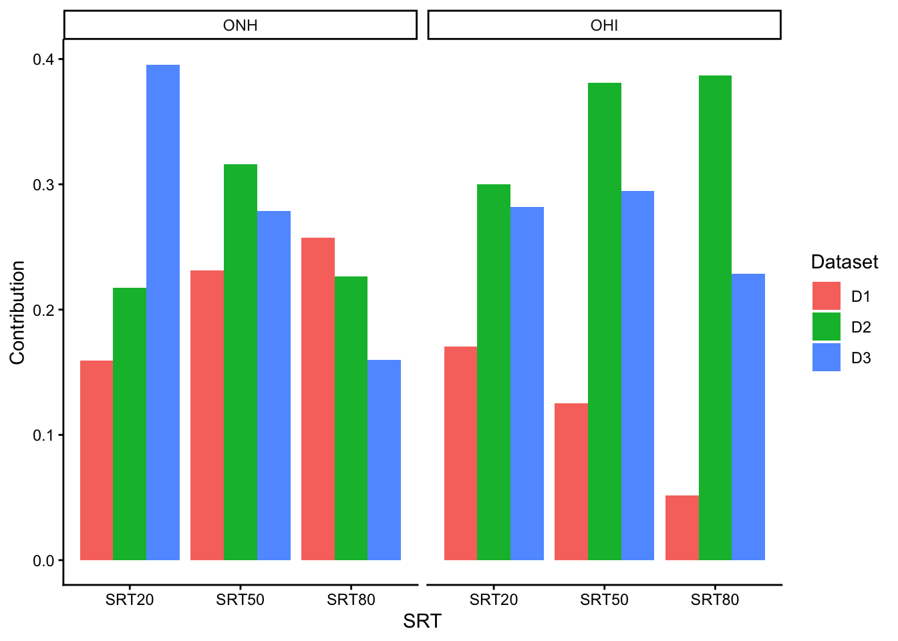
glmp_plot <- dominance_all %>%
filter(Predictor == "Glimpsing")
glmp_plot$Group <- factor(glmp_plot$Group, levels = c("ONH", "OHI"))
ggplot(glmp_plot, aes(x = SRT, y = Contribution, fill = Dataset)) +
geom_col(position = "dodge") +
facet_wrap(~Group) +
theme_classic() +
labs(title = "Glimpsing")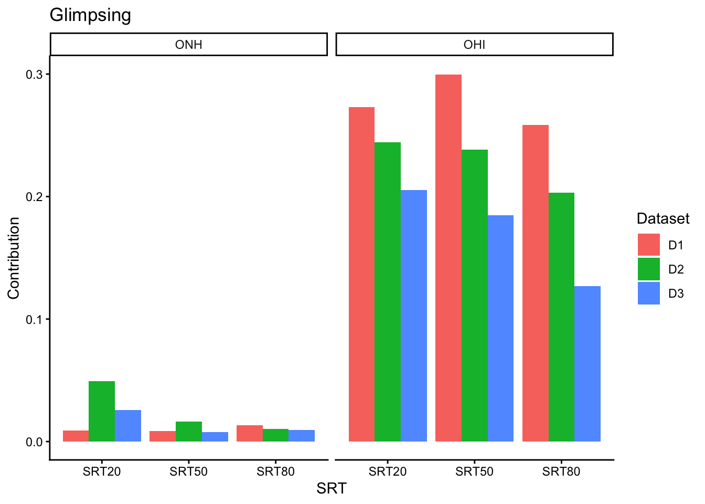
wm_plot <- dominance_all %>%
filter(Predictor == "WorkingMemory_PCA")
wm_plot$Group <- factor(wm_plot$Group, levels = c("ONH", "OHI"))
ggplot(wm_plot, aes(x = SRT, y = Contribution, fill = Dataset)) +
geom_col(position = "dodge") +
facet_wrap(~Group) +
theme_classic() +
labs(title = "Working Memory")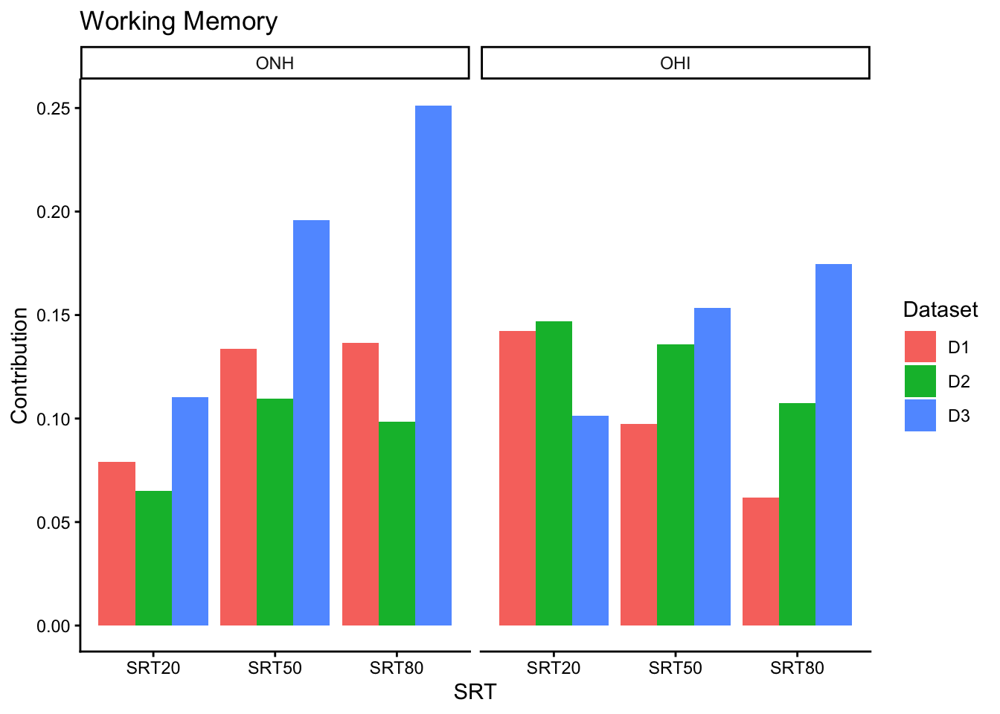
voc_plot <- dominance_all %>%
filter(Predictor == "Vocabulary")
voc_plot$Group <- factor(voc_plot$Group, levels = c("ONH", "OHI"))
ggplot(voc_plot, aes(x = SRT, y = Contribution, fill = Dataset)) +
geom_col(position = "dodge") +
facet_wrap(~Group) +
theme_classic() +
labs(title = "Vocabulary Knowledge")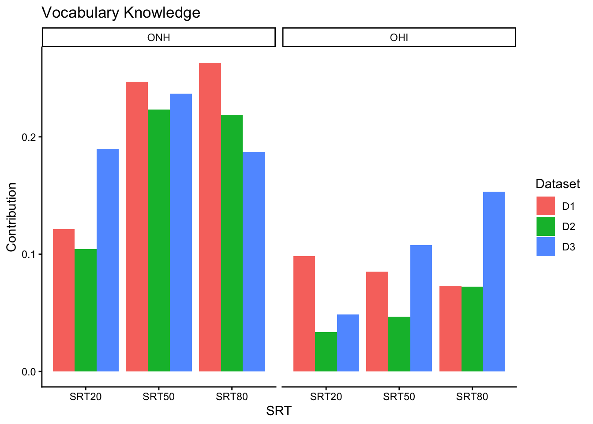
Replication analysis 4: Second descriptive analysis: Correlation analysis
Finally, I do a correlation analysis to examine relationships between predictor variables and speech recognition outcomes. This is different from the initial correlation analysis I did in initial data visualzation, this analysis os predictor variables vs the SRTs, not between each predictor variables.
This analysis aims to replicate patterns reported in the original study, they have used not only above 4 variables but all below.
Auditory-related PCA variables: Audiogram_PCA, SpeechModulation_PCA, EpisodicMemory_PCA, Interference_PCA Cognitive:WorkingMemory_PCA, Vocabulary, LinguisticClosure, Glimpsing
going through all coulmns related:
df$HearGroup <- factor(df$HearGroup, levels = c("ONH", "OHI"))
# predictor variables used in the paper
predictor_vars <- c(
"Audiogram_PCA",
"SpeechModulation_PCA",
"WorkingMemory_PCA",
"EpisodicMemory_PCA",
"Interference_PCA",
"Vocabulary",
"LinguisticClosure",
"Glimpsing"
)
# all experimental speech outcome variables
outcome_vars <- c(
"D1_SRT20_ESTOI", "D1_SRT50_ESTOI", "D1_SRT80_ESTOI",
"D2_SRT20_ESTOI", "D2_SRT50_ESTOI", "D2_SRT80_ESTOI",
"D3_SRT20_ESTOI", "D3_SRT50_ESTOI", "D3_SRT80_ESTOI",
"Overall_PCA (Experimental)"
)If I type individually for all 3 SRTs and across three datasets this will be a long code, so making a function to do so,
get_cor_table <- function(data, predictors, outcomes, group_name) {
results <- data.frame()
for (pred in predictors) {
for (out in outcomes) {
r_value <- cor(data[[pred]], data[[out]], use = "complete.obs")
results <- rbind(
results,
data.frame(
Group = group_name,
Predictor = pred,
Outcome = out,
Correlation = r_value
)
)
}
}
return(results)
}cor_onh <- get_cor_table(
data = df %>% filter(HearGroup == "ONH"),
predictors = predictor_vars,
outcomes = outcome_vars,
group_name = "ONH"
)
cor_ohi <- get_cor_table(
data = df %>% filter(HearGroup == "OHI"),
predictors = predictor_vars,
outcomes = outcome_vars,
group_name = "OHI"
)
correlation_of_all <- bind_rows(cor_onh, cor_ohi)
head(correlation_of_all) Group Predictor Outcome Correlation
1 ONH Audiogram_PCA D1_SRT20_ESTOI 0.4283421
2 ONH Audiogram_PCA D1_SRT50_ESTOI 0.5161147
3 ONH Audiogram_PCA D1_SRT80_ESTOI 0.5490233
4 ONH Audiogram_PCA D2_SRT20_ESTOI 0.5157464
5 ONH Audiogram_PCA D2_SRT50_ESTOI 0.6041048
6 ONH Audiogram_PCA D2_SRT80_ESTOI 0.4944739Since I need to see the whole table to compare it with the results from their study,
correlation_table_wide <- correlation_of_all %>%
pivot_wider(
names_from = Outcome,
values_from = Correlation
)
correlation_table_wide# A tibble: 16 × 12
Group Predictor D1_SRT20_ESTOI D1_SRT50_ESTOI D1_SRT80_ESTOI D2_SRT20_ESTOI
<chr> <chr> <dbl> <dbl> <dbl> <dbl>
1 ONH Audiogram_… 0.428 0.516 0.549 0.516
2 ONH SpeechModu… 0.141 0.247 0.244 0.171
3 ONH WorkingMem… -0.370 -0.491 -0.496 -0.325
4 ONH EpisodicMe… 0.0335 -0.184 -0.309 -0.0639
5 ONH Interferen… 0.140 0.171 0.215 0.251
6 ONH Vocabulary -0.465 -0.642 -0.662 -0.443
7 ONH Linguistic… 0.454 0.419 0.363 0.198
8 ONH Glimpsing 0.141 0.135 0.175 0.291
9 OHI Audiogram_… 0.640 0.563 0.405 0.744
10 OHI SpeechModu… -0.202 -0.293 -0.326 -0.243
11 OHI WorkingMem… -0.669 -0.584 -0.475 -0.611
12 OHI EpisodicMe… 0.211 0.121 0.0523 0.141
13 OHI Interferen… -0.322 -0.302 -0.287 -0.422
14 OHI Vocabulary -0.599 -0.553 -0.488 -0.376
15 OHI Linguistic… -0.116 -0.155 -0.152 -0.116
16 OHI Glimpsing -0.741 -0.738 -0.659 -0.674
# ℹ 6 more variables: D2_SRT50_ESTOI <dbl>, D2_SRT80_ESTOI <dbl>,
# D3_SRT20_ESTOI <dbl>, D3_SRT50_ESTOI <dbl>, D3_SRT80_ESTOI <dbl>,
# `Overall_PCA (Experimental)` <dbl>Discussion and Reflection
1) Comparison to the original paper
Comparison of analysis 1: Descriptive statistics
1) The descriptive statistics obtained in this part closely match with the patterns reported in the original study.
Reported participant characteristics in the original study |
Replicated results |
|---|---|
| The original study reported that the ONH group had a mean age of approximately 67 years (range: 60–74 years), while the OHI group had a higher mean age of approximately 72 years (range: 60–85 years). | The replicated results using their provided dataset showed a mean age of 67.4 years for the ONH group and 72.2 years for the OHI group.Replication analysis 1: Descriptive statistics |
| In terms of gender distribution, the ONH group consisted of 17 females and 3 males, whereas the OHI group included 13 females and 7 males. | The replication showed gender distribution is also identical to that reported in the original study, with 17 females and 3 males in the ONH group, and 13 females and 7 males in the OHI group.Replication analysis 1: Descriptive statistics |
These results indicate that the descriptive statistics for participant characteristics were successfully replicated with no discrepancies.
2) The audiogram visualization also successfully replicates the main pattern shown in Fig. 1 of the original study.Frequency by frequency mean audiogram from raw audiometric threshold columns like 250Hz, 500Hz, 1000Hz and so on from the “AuditoryVariables” sheet.
Original Study - Fig 1. Mean audiograms for the two listener groups

Replicated mean audiogram values for the two groups

The audiogram visualization also successfully replicates the main pattern shown in Fig. 1 of the original study. In both the original and replicated figures, the OHI group shows elevated hearing thresholds across frequencies compared to the ONH group, with the largest differences at higher frequencies. The overall shape and trend of the curves are highly consistent between the two figures.
No specific challenges were faced in this section, because the column names were clear in the data set in what to choose other than the additional preprocessing required for handling multi level headers in the auditory variables data sheet.
Comparison of analysis 2: Descriptive visualization
The original study used violin plots (Fig. 3) to compare the distributions of four key predictor variables between ONH and OHI groups: Audiogram PCA, speech glimpsing, Working Memory PCA, and vocabulary knowledge.
Original study - Fig 3. Violin plots for the four predictor variables

In the original figure, we can see clear group differences for predictors. The OHI group showed higher Audiogram PCA values, indicating poorer hearing sensitivity, and lower glimpsing scores compared to the ONH group. Generally, the distributions of Working Memory PCA and vocabulary knowledge appeared similar across the two groups, suggesting comparable cognitive abilities.
Replicated figure
The replicated violin plots show very similar patterns.

The replicated violin plots show very similar patterns. But,
The original plots show a wider range and more spread in some variables (for example glimpsing and vocabulary).
The replicated plots appear slightly more compressed, with narrower distributions.Additionally, the original figure includes statistical significance markers (example - *), which I could not obtain in the replicated plots.
The visual styling also differs, including axis scaling, smoothing of violin shapes, and panel formatting.
Reasons I think for the minor differences,
1) Due to variations in plotting parameters and preprocessing steps.
2) The original study does not specify details such as kernel density estimation settings, bandwidth selection, or scaling of variables prior to visualization. I think these factors influenced the shape and spread of violin plots.
Specific challenges Encountered
Selection of correct variables from the dataset, distinguishing between raw variables and PCA derived variables. The dataset contains multiple related variables.
Another was matching the visual style of the original figure. The original study includes specific formatting choices such as panel layout, axis scaling, and annotations, which were not fully described in the methods section.
Comparison of analysis 3: Inferential analysis: Predictor importance
Original study results
According to the dominance analysis they did, the relative importance of predictor factors varied clearly between groups. For ONH listeners, glimpsing made very little contribution to speech identification, but, for OHI listeners, it was a strong predictor. On the other hand, vocabulary understanding contributed more to ONH listeners across all datasets.
Dominance patterns differed depending on the type of dataset across situations. While audiogram measurements showed strong effect in noise masked settings, glimpsing showed total domination for OHI listeners in spectrally degraded speech. Overall, between 73% and 89% of the variance in speech recognition was explained by the chosen predictors.
When averaged over datasets, audiogram PCA ( about 30%) and vocabulary knowledge ( about 22%) contributed the most to ONH listeners, while glimpsing (about 31%) and audiogram PCA (about 29%) contributed significantly to OHI listeners, with vocabulary knowledge having a smaller impact (about 11%).
Working memory PCA had similar dominance for the two groups (ONH:13%; OHI: 18%). While the combination of these predictor variables explained a large amount of the variance on this general speech recognition component, linguistic processing factored heavily into ONH performance and access to speech information through glimpsing was a dominant factor for OHI (with minimal contribution for ONH).
Original study: Fig 4. Results of the dominance analysis

Replicated results
The main replicated results of the dominance analysis are in the “dominance_all” variable generated.
From that I generated the final ranking of the predictors for the two groups. It is in the “summary_dominance_analysis_table” variable generated, which I also paste here below as a table, for easily see the results section I write.
| Group | Predictor variable | Mean | SD |
| OHI | WorkingMemory_PCA | 0.12457697 | 0.03502737 |
| OHI | Vocabulary | 0.07989077 | 0.03688142 |
| OHI | Glimpsing | 0.22593611 | 0.05201853 |
| OHI | Audiogram_PCA | 0.24680431 | 0.11348276 |
| ONH | Glimpsing | 0.01665064 | 0.01347164 |
| ONH | Vocabulary | 0.19915969 | 0.05482451 |
| ONH | WorkingMemory_PCA | 0.13108319 | 0.05883812 |
| ONH | Audiogram_PCA | 0.24907301 | 0.0747741 |
The replication’s dominance analysis results closely match the main conclusions from the original study.
Audiogram PCA contributed the most to speech recognition for the ONH group, followed by vocabulary knowledge, working memory, and glimpsing.
The original conclusion that ONH listeners rely very little on glimpsing-based auditory cues is strongly supported by the fact that the contribution of glimpsing was nearly negligible.
Glimpsing was one of the most important predictors for the OHI group, and both Audiogram PCA and Glimpsing shown the greatest contributions.
Vocabulary made the least impact, while working memory made a substantial one.
The original study found that OHI listeners relied more on bottom-up auditory processing (glimpsing) than ONH listeners, which is consistent with this trend.
Overall, although the exact numerical contributions differ slightly from those reported in the original study, the overall pattern of results and the relative importance of predictor variables are highly similar.
I also plotted the results from my above variable tables: I am presenting only one for an example in comparison here (because I have done a visualization separately for analysis 2). Rest of the figures plotted from the results are also in above.
The generated plots for the dominance analysis also revealed the same pattern I see in the original study.

Comparison of analysis 4: Second descriptive analysis: Correlation analysis
Original study : Table 3. Correlation matrix of predictor variables with the three speech recognition outcome datasets. ( I am not going to paste the table here again because it is a complex table), I will just paste a screenshot here, this is not a figure, so it is not in the images folder.
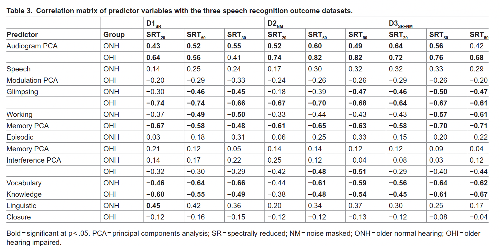
Replicated results : Are in the “cor_table_wide” variable generated. ( Here also, ( I am not going to paste the table here again because it is a complex table but I am going to write the results summary below), I will show a preview of my generated results as follows, I will just paste a screenshot here, this is not a figure, so it is not in the images folder.
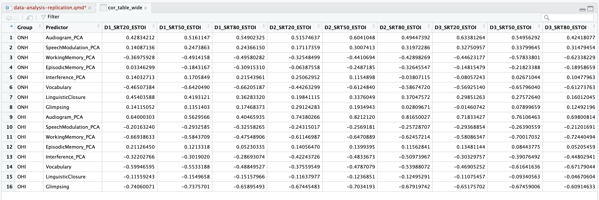
The results of the correlation analysis closely resemble those presented in the original study. So the data analysis replication was successful completely. Similar patterns of connections between predictor variables and speech recognition outcomes were seen in both the ONH and OHI groups.
Both groups’ audiogram PCA values were strongly positively correlated with speech recognition thresholds; the OHI group’s values were consistently higher. The main conclusion that OHI listeners rely more on auditory access mechanisms was confirmed by glimpsing, which revealed modest correlations for ONH but high negative correlations for OHI.
Speech recognition results showed moderately negative associations with vocabulary and working memory PCA, especially in the ONH group, suggesting a higher dependence on cognitive-linguistic variables. Overall, the direction and relative strength of correlations are quite similar to those found in the original study, indicating that the primary findings were successfully replicated.
Challenges/ reasons for challenges and missing details in the original study
Challenges
The replication process ran into some difficulties.
The dataset’s structure, which included multi-level headers and both raw and PCA derived variables, was one of the main challenges.
Careful inspection was needed to find the right variables and match them with those utilized in the original study.
The dominance analysis was very hard for me. The major reason was I was less familiarized with the type of overall analysis even though I was familiar with linear models.
Additional data processing and restructure were also necessary to match the precise structure of reported outputs, such as correlation matrices and visualizations.
Reasons for challenges
The original study’s lack of methodological detail was a major contributing factor to these difficulties.
Although the work provided a conceptual description of the broad analytical methodologies, it has not givem important implementation specifics such variable scaling, how to treat missing values, data preprocessing stages, and the precise computational procedures utilized for dominance analysis.
Similarly, there was no reporting of display characteristics such as statistical annotations, scaling, and smoothing.
Missing details in the original study
Minor numerical and visual differences between the replicated and original results are may be explained by the need to make appropriate assumptions during replication due to the lack of these details.
But I think I was able to obtain the general patterns shows that the replication was successful and replicated original study’s conclusion.
References
1) The study referred - https://doi.org/10.1371/journal.pone.0331487
2) Reference for the Dominance analysis - Humes et al. 2021 https://doi.org/10.3389/fnagi.2021.702739
3) Conceptual Introduction to Dominance Analysis - https://cran.rproject.org/web/packages/domir/vignettes/domir_basics.html
4) How to Read an Audiogram - https://iowaprotocols.medicine.uiowa.edu/protocols/how-read-audiogram
5) What is Correlation Analysis? A Definition and Explanation. - https://blog.flexmr.net/correlation-analysis-definition-exploration